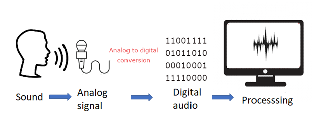
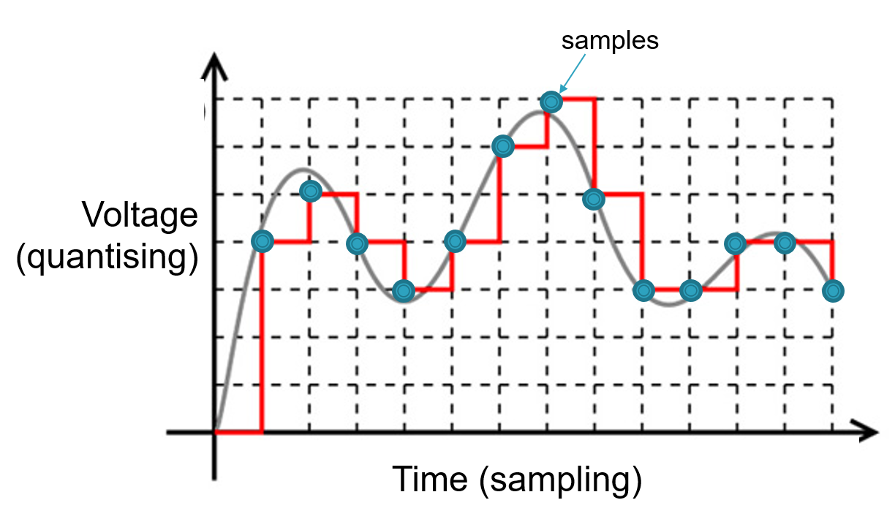
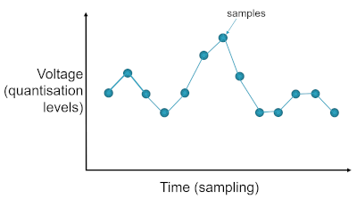
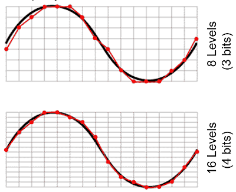

Sound
Objectives
- Understand that sound is analogue and that it must be converted to a digital form for storage and processing in a computer.
- Understand that analogue signals are sampled to create the digital version of sound.
- Describe the digital representation of sound in terms of:
- sampling rate
- sample resolution.
- Calculate sound file sizes based on the sampling rate and the sample resolution.
The storing and processing of sound and audio is another important function of computer systems. As for numeric data, characters and images the audio data has to be stored as binary patterns.
What is sound?
We should know from our early science lessons that sound is a change in air pressure and moves as a wave from the object generating the sound to our ears - it's a vibration of the air particles. Our ears act as a pressure sensor, able to detect these subtle changes of air pressure. The waves vibrate at a particular frequency which is measured in Hertz (Hz). The lower the pitch, the lower the frequency. Sound is *analogue i.e. it is constantly changing.
Note
The human ear can pick up sounds between ~20Hz to ~20kHz. Sound waves above 20kHz are known as ultrasound; those below 10Hz are infrasound.
For the computer to process the sound waves we need some additional equipment:
- microphone: to record the sound, the microphone is a pressure sensor converting that pressure into an electrical signal corresponding to the sound wave
- speaker: to emit the sound, the cones in the speaker generating the sound wave for the stored sound
- analogue to digital converter (ADC): to convert the audio voltage received by the microphone to a digital representation
- digital to analogue converter (DAC): to convert the digital representation of the sound to an audio voltage to be passed to the speaker cones

The process is summarised as:
- A microphone detects the sound wave, converts it into an electrical (analogue) signal
- The analogue signal is sampled at regular intervals.
- The samples are approximated to the nearest integer (quantised).
- Each integer is encoded as a binary number with a fixed number of bits.
There are two processes involved here:
- Sampling: the analog signal is measured at specific points in time, and these measurements are then used to represent the waveform. The rate at which these samples are taken is called the sampling rate, usually measured in Hertz (Hz). Common sampling rates include 44.1 kHz or 48 kHz.
- Quantisation: Quantization is the process of assigning digital values to each sample obtained through sampling. The number of bits used for quantization determines the resolution of the digital representation.
Sampling
Sampling is the process of periodically measuring the analogue signal such as those coming from a microphone and converting them into discrete values. The number of samples taken per second is known as the sampling rate which determines the range of frequencies that can be represented. A higher sampling rate provides a better quality reproduction of the sound wave than a lower sampling rate. It is analogous to the frame rate in video. Once these values have been captured these digital audio files can be processed in many different ways (Digital Signal Processing (DSP)).
To listen back to the sound is a reverse of this process, digital to analogue conversion, to reconstruct the original signal as best it can using the captured digital data.

The graph maps a very simple sound wave and the measurements, samples, being taken. Converting those samples into a digital representation (the red line) shows the results are not very close to the original sound wave. Converting that digital representation back to a sound wave would produce a wave as in the following diagram:

Compare the second sound wave to the first. It is some way off from being an accurate reproduction, and would be very noticeable on playback.
Increasing the number of samples recorded, known as a higher sampling rate, will increase the quality of the digital representation meaning we are better able to map the original sound wave to the final digital representation. For a typical audio CD the sampling rate is 44.1kHz, sample rates for phone are nearer to 8kHz. The higher the sample rate the more values being recorded and so the size of the audio file will increase.
Note
The reason for this value (44.1kHz) is thanks to the Nyquist Theorem which states: "If a system uniformly samples an analog signal at a rate that exceeds the signal’s highest frequency by at least a factor of two, the original analog signal can be perfectly recovered from the discrete values produced by sampling." In practical terms, the theorem means that at least two samples must be taken per period of the original waveform, fewer than two will me an the frequency of the original signal will be lost.
The highest frequency the human ear can perceive is approx. 20kHz, with a theoretical maximum of 22kHz, and it declines with age so the sample rate of 44.1kHz provides enough headroom to capture frequencies within the threshold of hearing. (If anything exceeds this frequency it will not be sampled properly and will produce unwelcome audio content and distortion known as aliasing).
Quantisation
When sampling we're focusing on the 'x' axis to determine the number of samples being taken in a given time period, for quantisation we're making adjustments to the 'y' axis i.e. the value at any given point in time. You can think of this as the equivalent to bit depth with graphics i.e. the number of bits available to store the value being sampled, known as the sampling resolution.

In the diagram above the second sample has increased the range of values available, with an increased number of bits, and thus able to more closely reproduce the sound wave. For almost every sample the actual value will lie between two possible values depending on the bit depth being used.
Consider an overly simplified system that is using a bit depth of 3 bits, we know that \(2^3\) is \(8\), so our values will range between \(0\) and \(7\). If the value sampled falls on any of these then we'll be fine but that's unlikely so the value recorded will have to be rounded or truncated to the nearest value available and thus introducing an error into the reproduction of that sound wave, as can be seen in the first of the patterns above. Increasing the bit depth by \(1\) to \(4\) bits gives us \(16\) different levels and the simple wave form above can be more accurately reproduced.
The bit depth used for CD recordings is \(16\) bits giving \(65,5536\) different levels; DVD uses \(24\) bits giving \(16,777,216\) different levels.
Recording sound with a higher bit depth also increases the dynamic range of sound that can be captured, this is the difference between the loudest and softest sound and measured in decibels (dB). For example, recording at \(8\) bits per sample gives \(49dB\) range (not very good); \(16\) bits per sample gives \(96dB\) dynamic range (much better).
Note
It's doubtful the human ear can distinguish between 16-bit and 24-bit recordings but having the extra bits makes life much easier for the sound engineers. It's often better to record at the highest bit depth possible and if necessary reduce for the final mix.
Similar to the sampling rate, an increase in the bit depth will increase the size of the audio file. Plus the number of channels (stereo or mono) needs to be factored in. One minute of CD audio data requires in excess of 5 million 16-bit numbers, of these half will be for the left channel and the other half for the right channel. That's approximately \(10 Mb\) for a minute of sound.
Audio file formats
Whatever bit rate or sample rate is used, the final realised version will be saved to an audio file and there are various formats used, many involving compression:
- .WAV: the uncompressed audio file, with a header and the individual samples, used by Windows operating systems
- .AIFF: the MAC os equivalent of .WAV files
- .MP3: compressed using a lossy compression format
- .WMA: similar to MP3 developed by Microsoft
- .OGG: open source format, loss less compression, better than MP3 but not as widely available
- .MID: not an audio file, reserved for MIDI files (see below)
Calculating the file size
The size of sound files can be calculated using the following formula:
\(fileSize = length \times sampleRate \times bitDepth\)
Thus a 30 second sound file, sampled at 8kHz, with a bit depth of 16 would be:
\(30 \times 8000 \times 16 = 3840000 \text{ bits} = 480,000 \text{ bytes}\) (\(480 Kb\))
MIDI
An alternative to recording the audio (the actual sound coming from an instrument) is to record the data about that sound using MIDI (Musical Instrument Digital Interface). As the name suggests it is designed to be used by digital musical instruments (keyboards, drum machines etc).
Remember, in digital sound recording audio is sound whereas MIDI contains no sound at all. Once the audio has been captured it's not possible to remove individual notes, or change the duration of particular sounds (the can be put through various filters which can change the sound quite dramatically but all the recorded elements will be there to some degree). With MIDI we capture information about the notes themselves e.g. the note number, its length, its velocity and it can be sent to another MIDI equipped instrument (or Digital Audio Workstation) via a specific channel.
The sound is then produced using a sound generator (or virtual instrument), perhaps a software source in the computer or passed to another instrument with in-built speakers. The sound you get back will only be as good as the sound generator being used!
Note
Vocal sounds cannot be recorded via MIDI
MIDI files act as a set of instructions that explain how the sound should be produced once attached to a playback device. Thus, with the right software you can edit any of the information about any of the notes (the pitch, duration, velocity etc..)
The size of MIDI files is significantly less than an equivalent audio file.
Playing with audio and Python
There are several libraries that can be installed to support audio playback and recording for use with Python including playsound, simpleaudio, pyaudio and pydub. Just to illustrate what can be done we'll have a look at pydub.
pydub is an external library and not installed by default so it needs to be installed using the command pip install pydub. Also, you will probably need to additionally install the ffmpeg library for your operating system. ffmpeg is a powerful library of commands for manipulating audio files, it is very powerful and pydub relies on this library for handling different audio formats. It can be simply installed using the command pip install ffmpeg-python. For playback we'll use pyaudio, so again this needs to be installed: pip install pyaudio.
Note
That's three new libraries that will need to be installed using pip:
- pip install pydub
- pip install ffmpeg-python
- pip install pyaudio
You will also need a sample audio file. You can download one here, a short piano track: piano.mp3. Download this file and save to a new directory. You can source your own audio files, or record your own or course. This sample was recorded using a sample rate of 24kHz and a bit-depth of 16 bits, so it's not great but serves as an example. In the same directory create a new Python file for the following program code examples:
Retrieve details about the audio
Play audio
Change the sample rate
In this snippet we loop through a number of different sample rates getting lower and lower. With each the sound quality degrades.
Change the bit depth
The function set_sample_width() takes a byte argument so the \(1\) used here sets the bit depth to 8 bits.
Note
There's no point entering a value higher than the original sample-rate!
There are many additional functions available in the pydub library. You can fade-in, fade-out, split tracks, reverse them, save the result to a fle and much more.